Beste restaurants
Milaan
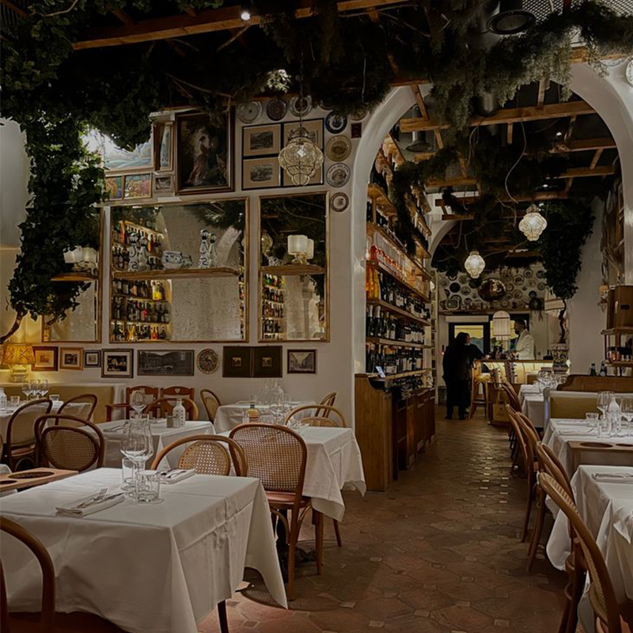
Mooi schattig Italiaans restaurantje, wel prijzig.
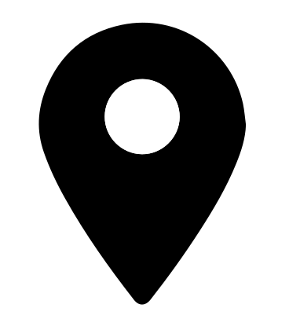
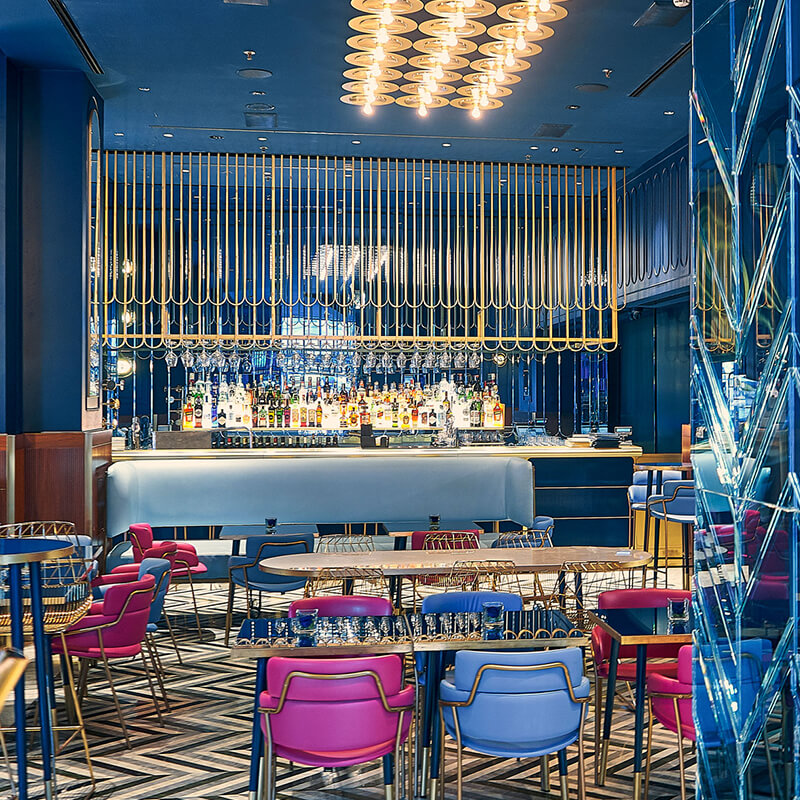
Een superleuk cafeetje, in het centrum van Milaan.
Genua
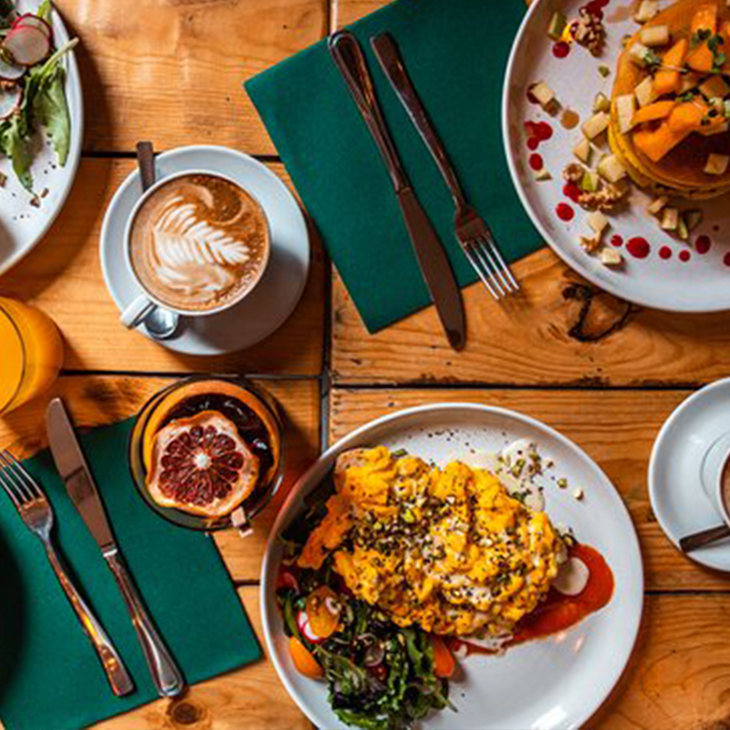
Goed en gezellig lunch tentje.
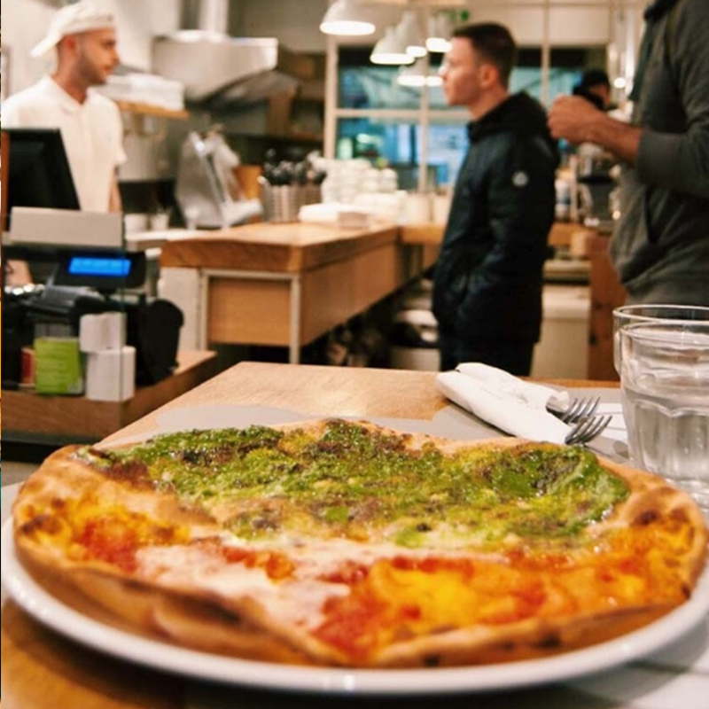
Lekker Italiaans restaurant in het centrum.
Florence
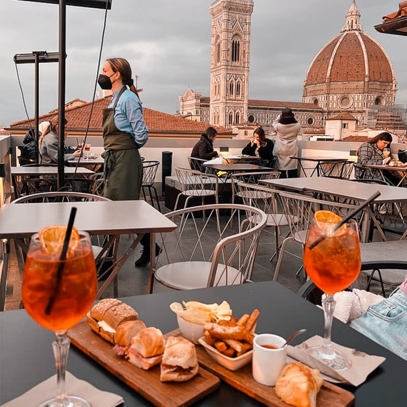
Rooftop bar met cocktails met uitzicht op kattedraal
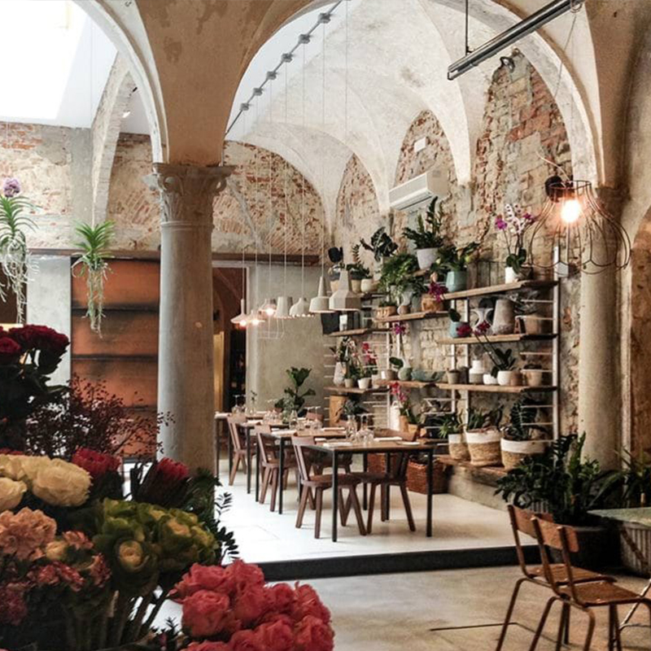
Leuk lunch restaurantje met lekkere gerechten.
Rome
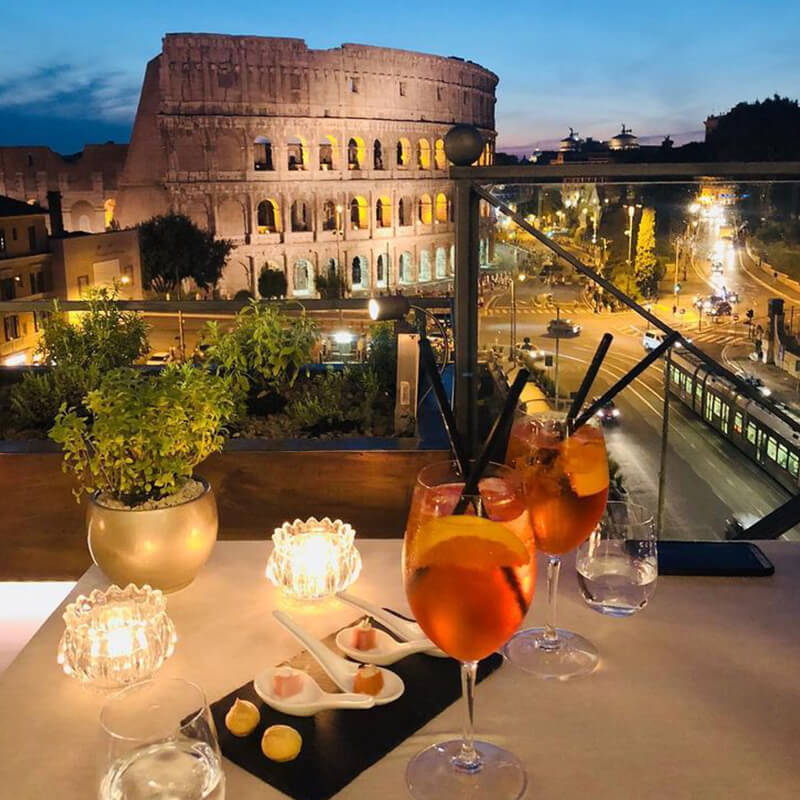
Rooftop met uitzicht op het Colosseum.
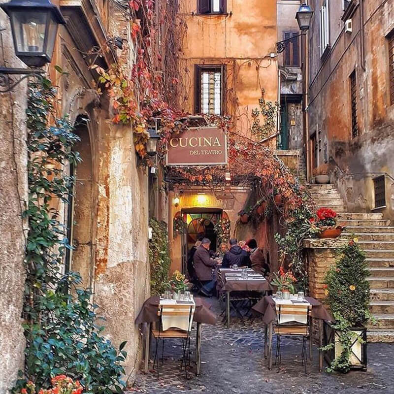
Leuk knus gezellig straatje met een leuk restaurant.
Verona
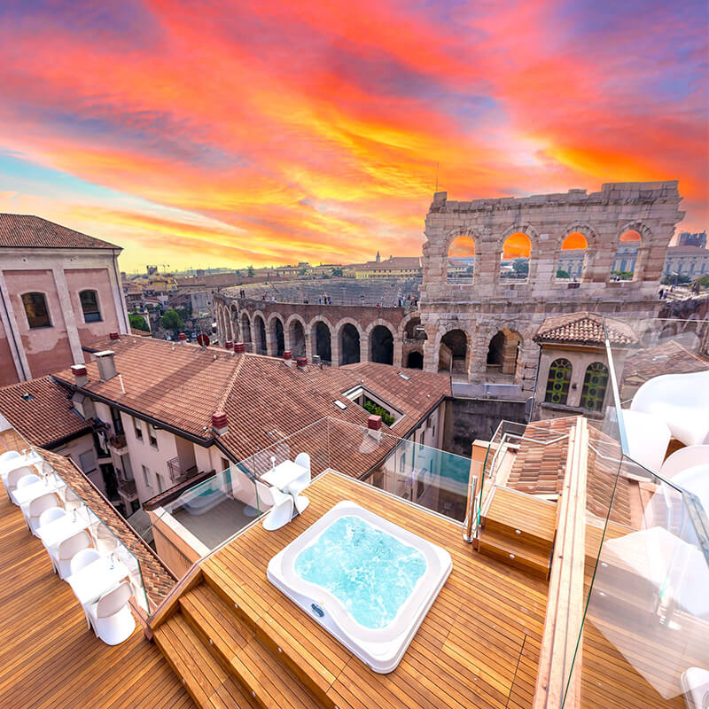
Arena sky Lounge bar.
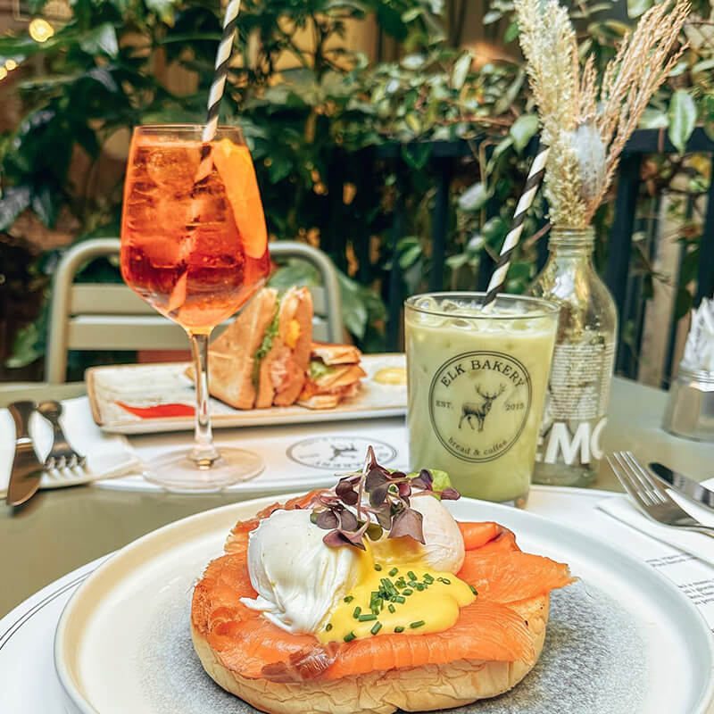
Leuk knus gezellig straatje met een leuk restaurant.